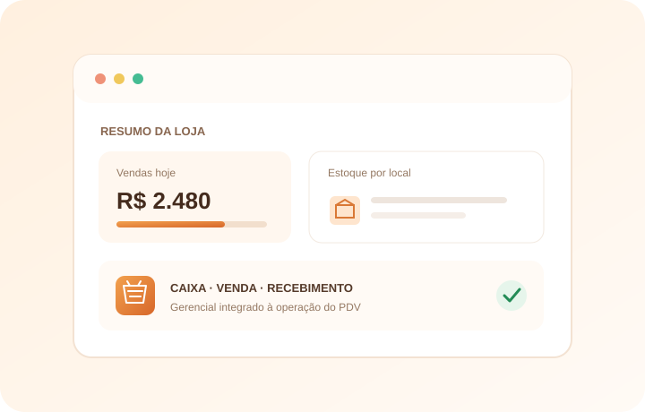

Cadastros comerciais
Produtos e grades, clientes, fornecedores e usuários, com permissões de acesso.
Organize cadastros, preços, estoque, caixa e vendas em uma plataforma com módulos Gerencial e PDV para a operação do comércio.

O módulo Gerencial concentra a administração do negócio; o PDV apoia a rotina diária do caixa.
Produtos e grades, clientes, fornecedores e usuários, com permissões de acesso.
Rotinas de compras e tabelas de preço por produto para organizar a operação comercial.
Consulta e movimentação de estoque, com locais de armazenagem e acompanhamento de saldo.
Abertura, operação, fechamento, sangrias e suprimentos associados às movimentações.
Consulta de produtos, registro de vendas e pagamentos, além de retomada de pré-vendas.
Consulta de recebimentos e baixa manual de contas pendentes.
Consulta de vendas e informações financeiras no Gerencial; venda vinculada ao caixa e ao estoque da loja.
Estrutura multi-tenant com separação de dados no banco de dados PostgreSQL.
Gerencial para cadastros e administração; PDV para seleção da loja e trabalho no caixa.
A operação offline-first e a autorização real de NFC-e ainda estão em desenvolvimento; os fluxos fiscais atuais são parciais.
Converse com a equipe sobre cadastro, estoque e operação de loja.